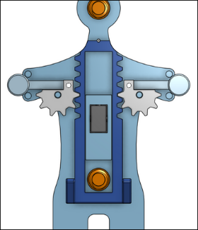

Хороший держатель для телефона отличается тем, что он универсальный и подходит для любой ширины сотового телефона. На известном сайте printables.com есть куча держателей, но половина из них просто коробочки под нужную модель телефона. Однако попадаются и универсальные модели.
Держатель - человечек
https://www.printables.com/model/46852-universal-car-phone-holder

- это модель с шестиренками в виде человечка, зажимающая телефон под собственным весом телефона.
Держатель - скоба
https://www.printables.com/model/212527-compliant-phone-mount
- это модель с использованием большой пружинной пластиковой полукруглой скобы. При вставке телефона внутренний "уголок" держателя "проваливается" вовнутрь конструкции. Когда телефон вытаскивается, внутренний уголок выпячивается наружу.
https://www.printables.com/model/164840-handlebartube-phone-mount-no-screw
- это держатель для телефона, в котором фиксация происходит большим колесом на крупной резъбе.
https://www.printables.com/model/186352-phone-holder-car-v7/files
- сомнительная модель, в которой держатели удерживают телефон просто на силе трения в месте, где находятся направляющие держателей.
https://www.printables.com/model/79817-car-phoneholder-for-65-85mm-phones/files
- еще одна модель, где телефон зажимается под собственным весом. Однако в ней не используются шестеренки, конструкция имеет только простые рычажки.
https://www.printables.com/model/212996-phone-holderstand-print-in-place-for-space
- модель, имеющая подпружиненные зажимы. Однако эти зажими выполнены в виде крупных декоративных элементов.